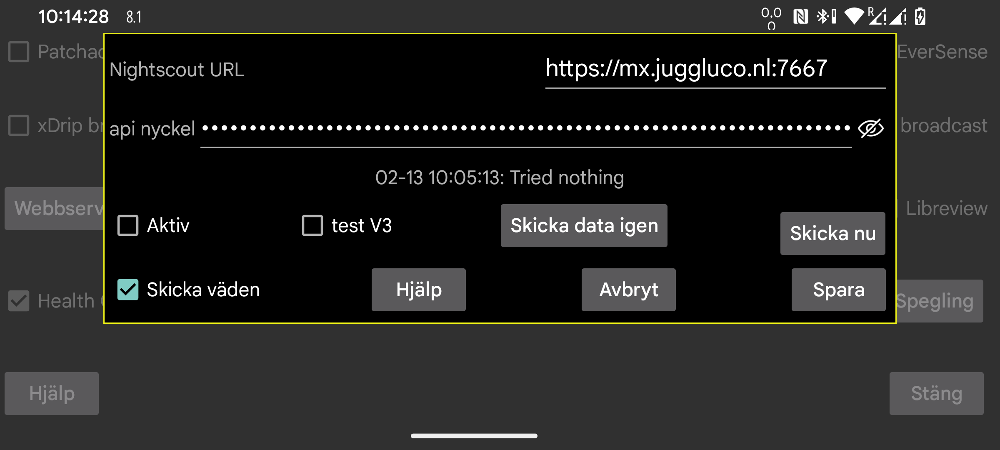

ar be de es fr hi nl pl ru sv tr uk uz zh en
I de flesta fall kan du även använda webbservern i Juggluco eller juggluco-server. Endast ett fåtal appar, som inte gör något mer än att visa Nightscout-webbsidan, behöver cgm-remote-monitor. Du kan till och med använda AAPS och AAPSClient med webbservern i Juggluco 7.4.1 eller senare.
Alla strömmade värden laddas upp till Nightscout-servern i det ögonblick de anländer. När flera sensorer används laddas alla värden för alla sensorer upp. Vissa Garmin-klockappar/urtavlor/widgets antar att värdena kommmer med 5 minuters mellanrum. När de får glukosvärden med en minuts mellanrum visar de bara den sista femtedelen av kurvan. Av den anledningen placerar webbservern som är inbyggd i Juggluco värdena 5 minuter från varandra, förutom när "intervall=sekunder" är satt till ett lägre värde.
URL: URL:en ska vara i form av https://värdnamn:port till exempel: https://example.com:6789
Aktiv: Aktivera uppladdningsprogrammet
test V3: Låt Juggluco använda API/v3 för att ladda upp till Nightscout. Använd den inte för att ladda upp till en Nightscout-server som tidigare tagit emot V1-uppladdningar och skicka inte V1-uppladdningar till en Nightscout-server som tidigare tagit emot V3-uppladdningar. På platsen för api_secret måste du ange Access Token med tillstånd att ladda upp behandlingar och poster. Du kan skapa en i Nightscouts webbgränssnitt under Admin Tool.
Skicka värden: Skicka även värden som behandlingar till Nightscout. Om du trycker på kryssrutan kommer du till en dialogruta där du kan ange för varje etikett vad det betyder i Nightscout. Dessa specifikationer delas med webbservern i Juggluco (vänster meny→Inställningar→Webserver). Först när alla etiketter är hanterade kan du markera "Skicka värden". Om du senare lägger till en ny etikett måste du komma ihåg dig själv för att ange vad du ska göra med den. På grund av en bugg i Nightscout, visas insättningar vid äldre tidsperioder eller raderingar endast efter att objekt med en ny tid har lagts till. Det gör att det är bättre att skicka mer sällan till Nightscout. Nu görs det varje gång användaren byter bort från Juggluco genom att stänga av displayen eller gå till en annan app.
Skicka data igen: Ladda upp all data igen till Nightscout-servern
Skicka nu: Normalt skickas data direkt när de kommer från sensorn eller en spegelanslutning. Tryck på den här knappen för att skicka data igen efter att ett tidigare försök av någon anledning misslyckats.
WearOS-versionen av Juggluco 4.15.0 eller senare kan ladda upp glukosvärden direkt till Nightscout, men det tar mycket energi och du riskerar att tömma batteriet, särskilt när det inte går att kontakta Nightscout-servern. I nästan alla fall är det bättre skicka dem via Juggluco på telefonen, surfplattan eller via Juggluco-servern på datorn. Då kan du stänga av Aktiv när det inte finns någon tillförlitlig anslutning.